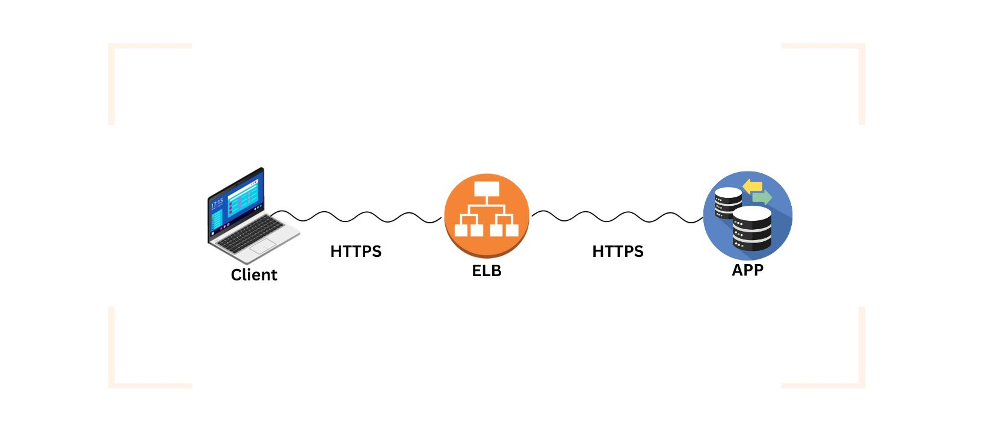
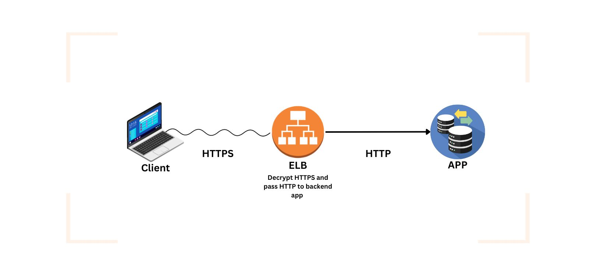
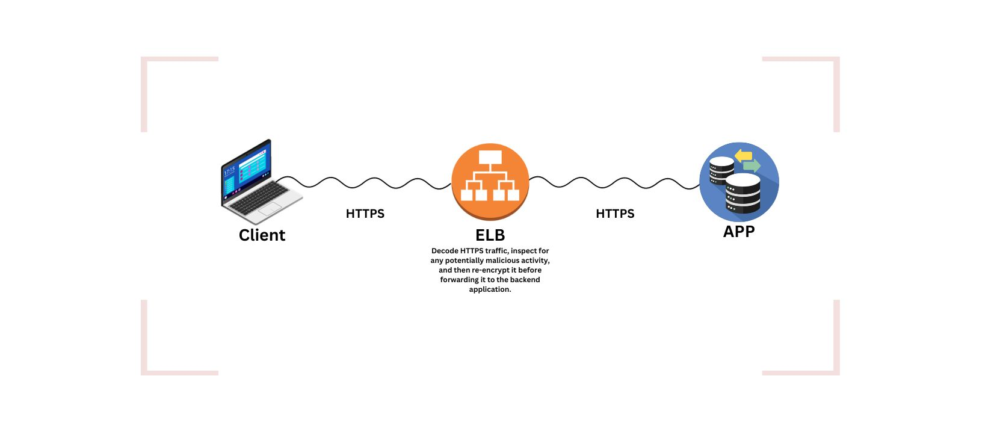

Kubernetes is an open-source container orchestration platform that automates the deployment, scaling, and management of containerized applications...
In scenarios where a DevOps engineer individually manages containers, accessibility to applications can become challenging. For instance, if numerous containers are running in production and some go down, manually restarting each container becomes impractical. Kubernetes addresses this challenge by automating the orchestration and management of containers, ensuring high availability, scalability, and efficient deployment of applications at scale.
| Docker | Kubernetes |
|---|---|
| Ephemeral state: Containers are designed for stateless applications with data often lost after stopping. | Long-lived: Manages stateful applications, ensuring persistence and handling disruptions. |
| No autoscaling: Requires manual scaling based on demand. | Autoscaling: Provides automatic horizontal scaling based on metrics like CPU utilization. |
| No autohealing: Lacks built-in mechanisms for automatic recovery from failures. | Autohealing: Automatically detects and recovers from container or node failures. |
| No enterprise support: Limited official enterprise-grade support. | Enterprise support: Backed by vendors, offers strong enterprise-grade support with SLAs. |
Solves Ephemeral Nature
Kubernetes clusters manage containers across nodes, addressing the ephemeral nature of Docker by redistributing workloads and ensuring high availability.
Replica sets enable autoscaling
Kubernetes replica sets dynamically scale containerized applications based on demand, automating the process of adjusting the number of replicas for optimal resource utilization.
Autohealing with Kubernetes control
Kubernetes provides automated recovery mechanisms, detecting and mitigating container or node failures to maintain application stability and reliability.
Lets Take an example of two nodes Maste Node(Control Plan), Worker Node(Data Plan)
What is Kubernetes distrubutions?
A Kubernetes distribution is a software package that provides a pre-built version of Kubernetes
| Kubernetes | Amazon EKS |
|---|---|
| Not managed (self-managed) | Managed by AWS |
| Open Source | Amazon EKS is a managed service provided by AWS, and the management aspect is not open source. |
A Pod is like a blueprint that tells Kubernetes how to run a container. In Docker, we use a command like docker run to start a container, but in Kubernetes, we create a file called pod.yml to define everything, and then we use kubectl apply -f pod.yml to make it happen. Usually, a Pod has only one container, but sometimes it might have more.
Example of pod.yml file:
apiVersion: v1
kind: Pod
metadata:
name: nginx
spec:
containers:
- name: nginx
image: nginx:1.14.2
ports:
- containerPort: 80
Kubectl is a command-line tool for working with Kubernetes. It helps you manage your applications running on a Kubernetes cluster.
# Create a pod based on the configuration in pod.yml
kubectl create -f pod.yml
# Get information about the nodes in the cluster
kubectl get nodes
# See the list of running pods
kubectl get pods
# Get more details about a specific pod
kubectl get pod -o wide
# Display information about all resources
kubectl get all
# Display information in watch mode
kubectl get pod -w
A Kubernetes Deployment is a way to achieve automatic healing and scaling for your applications.
Auto-Healing:When you create a Deployment in Kubernetes, it automatically takes care of ensuring that the desired number of replicas (defined in the replicas variable in the deployment.yml file) are always running. For instance, if you set replicas: 2, and one pod unexpectedly goes down or is intentionally deleted, Kubernetes Deployment will swiftly create a new pod to replace it. This ensures that the specified number of pods is maintained, promoting resilience and minimizing downtime.
Auto-Scaling: The concept of auto-scaling is inherent in Kubernetes Deployments. If you need to scale your application based on demand or other metrics, you can easily adjust the replicas value in your Deployment configuration. For example, if you initially set replicas: 2 and later decide to scale up to handle increased traffic, you can update it to replicas: 3, and Kubernetes will automatically create an additional pod.
In summary: Kubernetes Deployments provide a robust mechanism for managing the lifecycle of your application, automatically healing it in case of failures, and allowing for seamless scaling to adapt to changing requirements.
# Get information about Deployments
kubectl get deploy
# Get information about ReplicaSets
kubectl get rs
# Apply a Deployment configuration from a YAML file
kubectl apply -f deployment.yml
Deployment Overview
Kubernetes services play a crucial role in ensuring reliable and accessible communication between different components of an application. Let's first understand how Kubernetes operates without services.
Example: Imagine you have three pods (P1, P2, P3) serving an application, and three individuals (I1, I2, I3) are accessing these pods. Now, if one of the pods, let's say P1, goes down due to some issue, Kubernetes automatically creates a new pod to replace it. However, the problem arises because the new pod gets a new IP address. As a result, I1, who was using the old IP to access the application, can no longer reach the newly created pod.
This manual assignment of IP addresses to customers becomes impractical. This is where Kubernetes services come into play.
How Kubernetes Works with Services:
Kubernetes introduces services to address the issue mentioned earlier. Here's how it works:
Load Balancing: Kubernetes has a service called load balancing. This service is placed in front of your deployment, and you provide the IP address of this load balancer to the individuals (I1, I2, I3). Now, regardless of which pod is serving the application, users can access it through the load balancer's IP.
Discovery Services: Even with load balancing, there's a potential problem of changing IP addresses. This is where discovery services come in. Kubernetes uses labels and selectors to overcome this challenge.
When you define your deployment in the deployment.yaml file, you include metadata with a label, for example, label: exampleapp. This label is associated with all pods created by that deployment.
When a pod goes down and is autohealed, Kubernetes uses the same deployment.yaml file to create a new pod. Although the IP address changes, the label remains the same.
With labels and selectors, the discovery service ensures that regardless of the pod's IP address, users can reliably access the application through the load balancer using the label.
In summary, Kubernetes services, including load balancing and discovery services, simplify the management of communication between different components of an application, ensuring reliability and accessibility even when pods are dynamically created or replaced.
Different Types of Services:
Example on Node Port:Link
Note: We cannot do load balancing or expose the application to the external world on Minikube because Minikube is a tool designed to run Kubernetes clusters locally for development and testing purposes. It provides a lightweight and easy-to-set-up environment to simulate a Kubernetes cluster on a single machine. However, there are certain limitations in Minikube that make it less suitable for certain production-like scenarios, such as load balancing and exposing applications to the external world in the same way you would in a production environment.
ClusterIP: Default Service, This represents the default service type in Kubernetes.
An Ingress is a Kubernetes object that defines routing rules, facilitating the management of external access to services within a cluster.
In Kubernetes, without using Ingress, the default load balancing mechanism is round-robin, where incoming requests are evenly distributed among the available pods. However, for more advanced features and routing capabilities, Ingress can be employed with specific ingress controllers.
Motivation for Ingress:
Problem-1: Lack of Advanced Features (Round Robin Mechanics) Prior to Kubernetes, many companies utilized virtual machines (VMs) with various load balancers (e.g., Nginx, F5), offering features like sticky sessions, path-based routing, domain-based routing, IP whitelisting, blacklisting, and more. However, when transitioning to Kubernetes, some of these advanced features were initially missing. While Kubernetes provides options like load balancing and NodePort for service exposure, features such as sticky sessions and complex routing were not readily available.
Problem-2: Cost When utilizing a load balancing service in Kubernetes, the cloud provider generates an elastic IP, leading to increased costs.
To address this gap Kubernetes introduced the Ingress concept. Instead of building all these features natively into Kubernetes, it encourages users to create Ingress resources. Meanwhile, load balancing companies developed Ingress controllers that integrate with Kubernetes. Users can then select an appropriate Ingress controller, deploy it in their Kubernetes cluster, and create Ingress resources to define specific requirements such as routing rules, thereby solving the identified problem.
You can find the Example of ingress# Create Ingress resource from ingress.yml kubectl apply -f ingress.yml # Check the status of Ingress resources kubectl get ingress
Here are the main strategies:
‘SSL passthrough’ passes encrypted HTTPS traffic directly to the backend servers without decrypting the traffic on the load balancer. So any nodes can't read the contents in the traffic and pass through them all the way to the destination.
SSL termination (a.k.a. SSL Offloading) decrypts all HTTPS traffic when it arrives at the load balancer, and the data is sent to the destination server as plain HTTP traffic.
SSL bridging is a process where incoming encrypted (SSL/TLS) traffic is decrypted at a load balancer or a similar device. The load balancer inspects the decrypted traffic for security purposes and then re-encrypts it before forwarding it to the backend servers. This allows the load balancer to perform security checks on the traffic without burdening the backend servers with the task of SSL/TLS encryption and decryption.
Kubernetes Role-Based Access Control (RBAC) is a security feature that controls access to Kubernetes resources based on a user's role. It's a type of identity and access management (IAM) in AWS.
Okay, imagine Kubernetes is like a big shared office space, and different teams work in different rooms. RBAC, or Role-Based Access Control, is like giving everyone the right keys to the right rooms and saying what they can do there.
Role: (Giving permissions to act on a work) A 'Role' is like a specific job. Let's say we have a job called 'Pod Viewer,' which means you can only look at and get information about pods.
Role Binding: (attaching the role to the user) 'Role Binding' is like giving that job to a person. If we give the 'Pod Viewer' job to Alice, it means she can only look at and get info about pods.
So, in Kubernetes, we create a 'Pod Viewer' job (Role) and then give that job to specific people (Role Binding). This way, each person can only do what their job allows, making sure they don't mess with things they shouldn't. It's like making sure everyone has the right keys to the right rooms in our shared office space.
In Kubernetes, creating users is not like how we do it on regular systems like Linux. Instead of using commands to add users, Kubernetes lets external services handle user management. For example, many apps now allow you to log in with your Google or Instagram account. In this case, Kubernetes relies on these external services for user information. So, making users in Kubernetes means connecting to these outside sources for user details, not using the usual user creation commands.
Purpose: Enhancing Kubernetes with additional features that are not present in the core Kubernetes API.
Example Use Case: If you need an advanced security feature, you might create a Custom Resource Definition for a custom security policy.
Imagine you want to manage a specialized security policy in your Kubernetes cluster.
Think of a CRD as the form you fill out to request a new service (e.g., advanced security).
The CR is the actual form you submit, specifying the details of the service you want.
Custom Controllers are like the service providers who process your form, ensuring that the requested service is implemented and maintained according to your specifications.
This mechanism provides extensibility to Kubernetes, allowing users to define and manage custom resources beyond what is provided by default in Kubernetes.
ConfigMaps:
Example:
Imagine you have a web application that connects to a MySQL database...
Secrets:
Example:
Passwords, database details...
| Feature | Secrets | ConfigMaps |
|---|---|---|
| Purpose | Securely store sensitive data | Store non-sensitive configuration |
| Data Security | Encoded (not encrypted) | Plain text |
| Example Use Cases | Database credentials, API keys | Environment variables, config files |
| Pod Consumption | Environment variables, volumes | Environment variables, volumes |
| Immutability | Immutable after creation | Immutable after creation |
| Encoding | Base64 encoded | Plain text |
Monitoring is crucial in Kubernetes to keep track of how everything is running...
Prometheus: Think of Prometheus as the detective. It asks questions about what's happening in the clusters.
Grafana: Now, imagine Grafana as the artist who takes the detective's findings and turns them into visual, easy-to-understand charts and graphs...
So, Prometheus queries the clusters, Grafana makes the information look good, and together they help you keep everything in check.